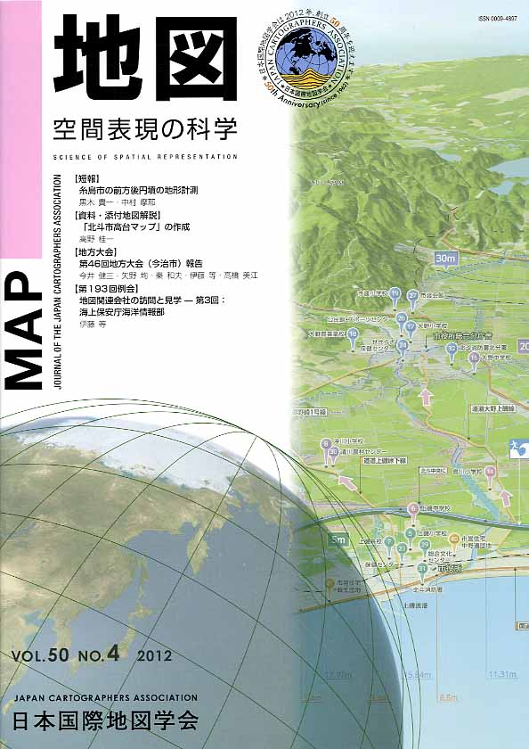

≪No.50 No.4 添付地図≫


本図を許可なく複製・利用することを禁止します。
| 最 新 号 | バックナンバー | 添付地図目録 | 投 稿 規 程 |
Vol.50 No.４ （通巻２００号） ２０１２年
| 【短報】 | 糸島市の前方後円墳の地形計測 | 黒木貴一・中村摩耶 |
| キーワード：レーザー距離計、DEM、地形計測、前方後円墳 | ||
| 【資料・添付地図解説】 | 「北斗市高台マップ」の作成 | 高野桂一 |
| 【地方大会】 | 第46回地方大会（今治市）報告 | 今井健三・矢野 均・秦 和夫・伊藤 等・高橋美江 |
| 【例会】 | 地図関連会社の訪問と見学 ― 第３回：海上保安庁海洋情報部 | 伊藤 等 |
| 【特別会員名簿】 | ||
| 【リレーメッセージ：地図・地図学への思い】 | 旧版地形図への郷愁 | 立石友男 |
| 【年間総目次】 | ||
| 【学会記事】 | ||
| 【添付地図】 | 北斗市高台マップ | |
|
≪No.50 No.4 表紙≫ |
|
|  |
|
|
|
≪No.50 No.4 添付地図≫ |
|
本図を許可なく複製・利用することを禁止します。
|